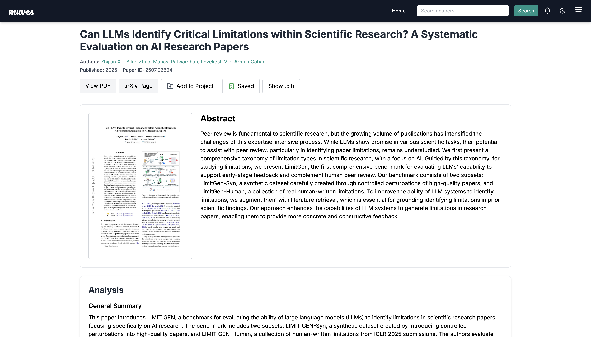

Explore the Product
Muves is powered by intelligent AI agents that help you discover, analyze, and organize AI research more effectively.
Project Workspace
The Project Workspace lets you organize research papers under specific projects, helping you stay focused and manage your research efficiently. The Muves Research Assistant agent works alongside your paper collection to automatically generate a structured literature review tailored to your project. You can also chat with the Research Assistant to ask questions, summarize key ideas, or explore concepts—using only the papers you've added to the project. It's your personal research environment, powered by AI.
Trending Papers
The Trending Papers feature helps you cut through the noise to find the most relevant and impactful research in AI. By surfacing papers that are gaining traction in the community, it makes it easy to spot breakthroughs, follow emerging trends, and focus on what truly matters in a fast-moving field.
Paper Analysis
The Paper Analysis agent helps you make sense of complex research papers by providing clear, structured insights. It highlights what the paper is about, why it matters, and what strengths or limitations it might have—all in a format that's quick to read and easy to act on. Whether you're exploring new ideas or staying current in your field, it makes research faster and more approachable.
Topic Summary
The Topic Summary agent helps you quickly understand complex areas of AI research. It provides a clear, high-level overview of any topic, highlights key insights, and suggests related areas to explore. Whether you're learning about a new concept or deepening your understanding of a familiar one, this tool makes it easier to grasp what's important and where the field is heading.